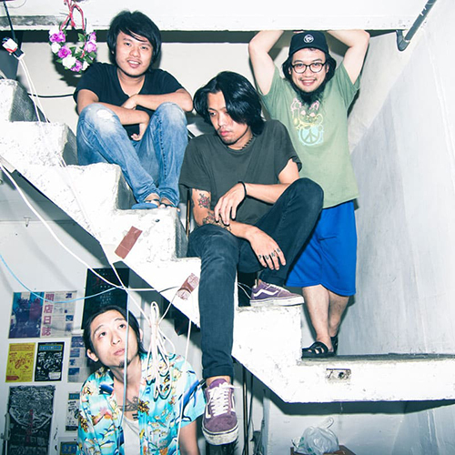
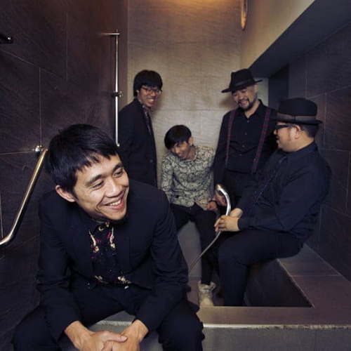
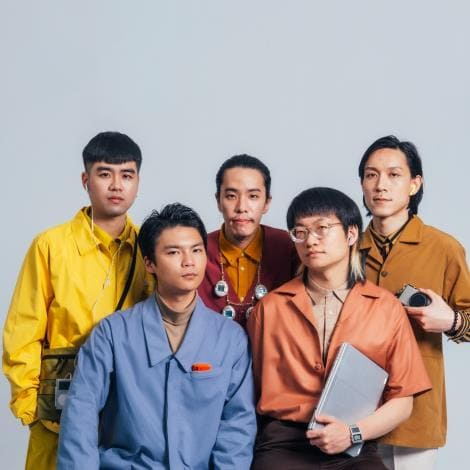
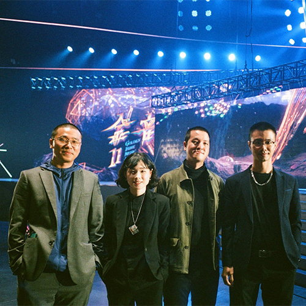

樂團列表
-

無妄合作社
由四個不事生產的懶人組成的樂團，成立以來在台北、基隆與台東等地進行創作，音樂受啟發自香菸焦油、林間野味與都市廢氣。
易經：「無妄之疾，勿藥有喜」，突然得了死不了的病，不吃藥就會痊癒。對於種種欲加諸承擔的文明，我們不願戒斷與根治。
郭力瑋: guitar & vocal
謝秉男: guitar & vocal
謝碩元: bass
邱孝齊: drum
-

非人物種
現實拖磨少年時的夢，生活跟理想你要選那一項？
這是成為男子漢的必經路程。
踏著黑紫色的雲彩，口中哼著不成調的音階來到人世間，三頭六臂手持雞腿降臨凡間，帶給俗世人們無盡的苦惱與納悶，毫無頭緒的前奏，騎虎難下的主歌，風流倜儻的副歌與不知所措的結語，狂亂的嘶吼猶如天蓬元帥下凡，雜亂無章的演奏彷彿春天的水溝，帶給你莫名奇妙又充滿快感帶點尷尬的氛圍。
才氣充滿的粗獷4人樂隊專門救災，切西瓜。
撥屎 / Bass, Vocal
阿顯 / Guitar, Vocal
智明 / Guitar, Vocal
阿來/ Drums
-

落日飛車
二零零九創立於台北市松仁路麥當勞樓上的樂隊。
中間有休息一下，後來有起床。
由主唱兼吉他手國國、貝斯手弘禮、鍵盤手小甘、薩克斯手浩庭和鼓手尊龍共五人組成。
-

當代電影大師
當代電影大師是一支成立於台北的四人樂隊，2019年同步發表《拍譜》、《狀態》兩張迷你專輯，2021年發表首張專輯《告訴我他們都在本來的什麼地方》。歌曲風格受九零年代經典樂隊影響，以直線噪音、後龐克、不軟的⺠謠及低傳真金曲為其創作指標。
目前成員分別為黃元懋（主唱、吉他）、曾上杰（貝斯）、范詠琪（吉他）以及黃挺榕（鼓）。